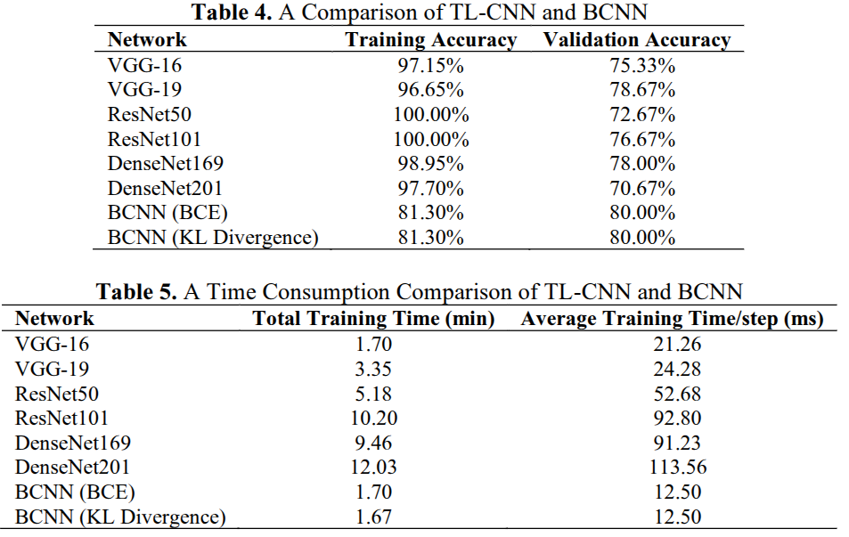
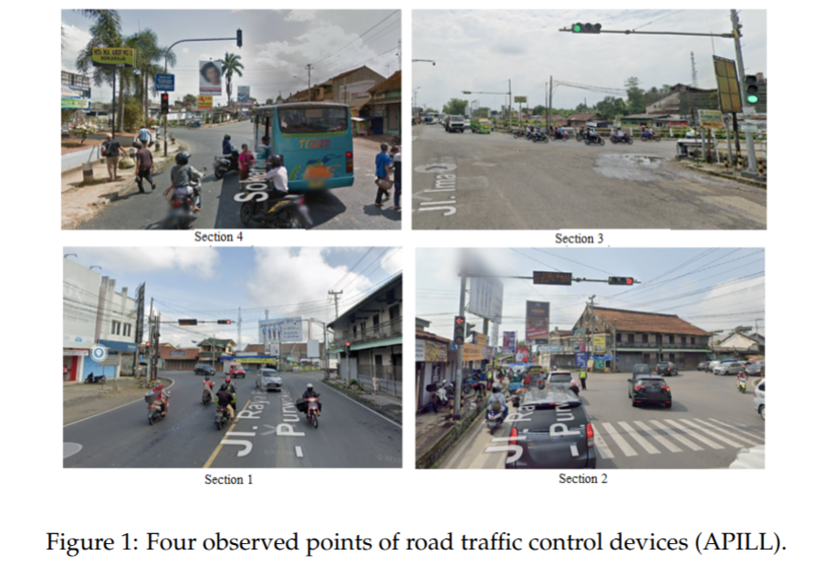
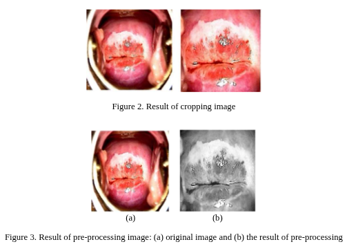

Publications

Compensating for Kinematic Drift in X-Drive Mobile Robot Using Model-Free Reinforcement Learning
23rd International Conference on Electrical Engineering/Electronics, Computer, Telecommunications and Information Technology (ECTI-CON) (2026)
📄 Paper

Addressing Overfitting in Dermatological Image Analysis with Bayesian Convolutional Neural Network
Jurnal Ilmiah Teknik Elektro Komputer dan Informatika (JITEKI) (2024)
📄 Paper

Intelligent Traffic Light Time Cycle Simulation Model using Fuzzy Mamdani
JURNAL INFOTEL (2024)
📄 Paper

The Effect of Features Combination on Coloscopy Images of Cervical Cancer Using The Support Vector Machine Method
IAES International Journal of Artificial Intelligence (IJ-AI) (2024)
📄 Paper